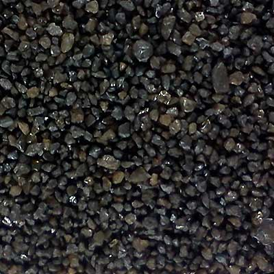
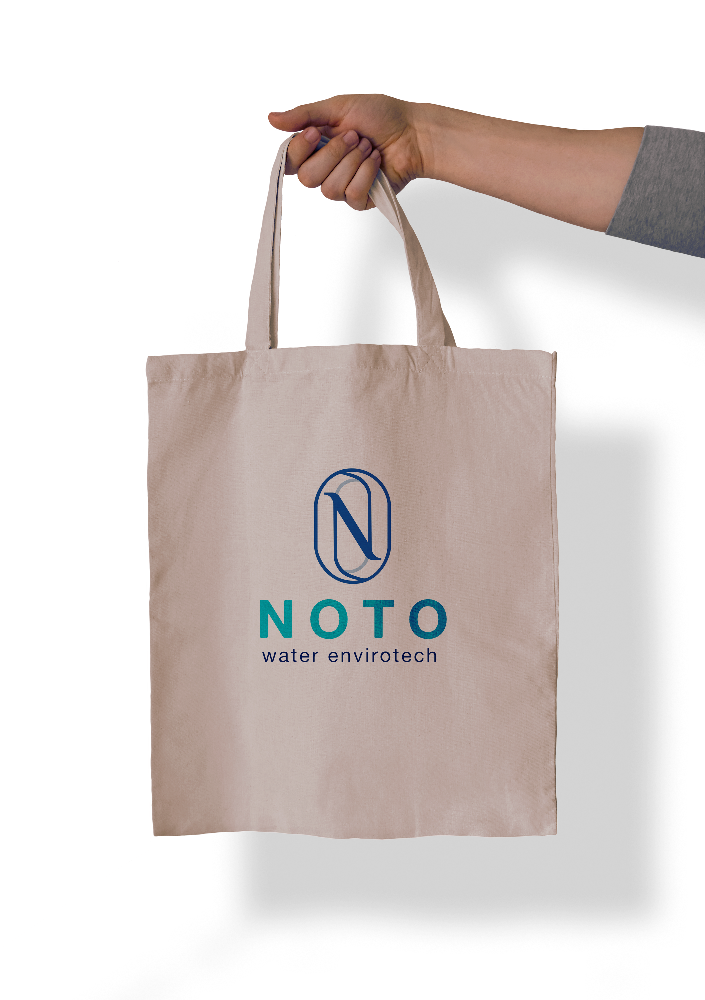
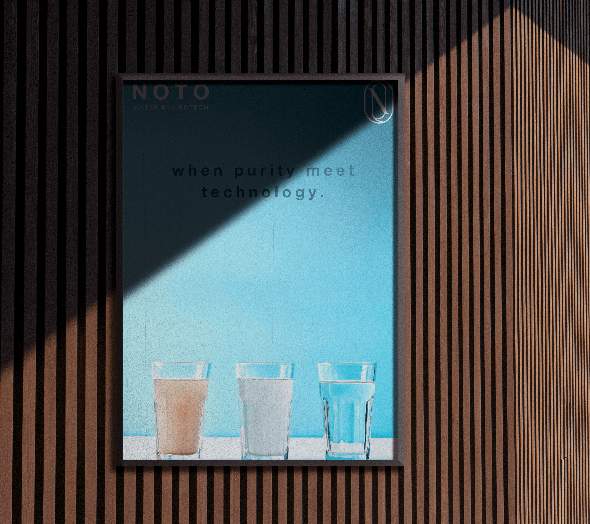

“Every Drop Counts — drink pure, live well.”
Selamat datang di NOTO, tempat kemurnian berpadu dengan inovasi teknik modern. Sejak 1995 di Bandung, kami telah melayani lebih dari 800+ mitra residensial, komersial, dan pabrik industri dengan sistem filtrasi air murni berstandar mutu tertinggi.
Tahun Berdiri di Bandung
> 28 Tahun Pengalaman
Klien & Proyek Selesai
Rumah, Hotel, Pabrik & RS
Tingkat Purifikasi Air
Bebas Besi, Kapur & Bakteri
Layanan Full-Cycle
Lab • Rancang • Pasang • Rawat
Pilih kategori solusi di bawah untuk melihat spesifikasi teknik dan sistem pengolahan air yang sesuai dengan kebutuhan Anda.
Komersial & Industri
(500 - 50.000 GPD)
Eliminasi Kapur Boiler & Cooling Tower
Sub-Mikron 0.01 µm
Bebas Bakteri & Virus
Atasi Kuning, Bau, & Kadar Besi Tinggi
Pengolahan Air Limbah Rumah Sakit & Pabrik
Resin, Karbon Aktif & Membran Filmtec
NOTO tidak sekadar menjual mesin. Kami menganalisis kualitas air baku melalui uji laboratorium terakreditasi KAN, merancang formulasi media filter yang tepat, merakit unit dengan material stainless steel 304/316 berstandar sanitasi makanan, hingga memberikan garansi purna jual berkala.
Setiap sistem pengolahan dirancang untuk melampaui baku mutu kesehatan lingkungan, bebas bakteri E. Coli, bau, kekeruhan, serta logam berbahaya timbal dan besi.
Workshop dan teknisi ahli kami berbasis di Bandung dengan kesiapan pergantian media filter rutin, kalibrasi membran, dan respons darurat 24/7.
Kirimkan sampel air Anda atau tim kami siap datang langsung untuk melakukan pengetesan TDS, pH, Fe, dan Hardness di lokasi Anda tanpa biaya komitmen.
Pilihan paket mesin Reverse Osmosis, Water Softener, dan Ultrafiltration siap pasang bergaransi resmi untuk residensial, bisnis, dan industri.

Kapasitas ~3.800 Liter/hari • Frame Stainless Steel 304 • Pompa High Pressure Rotary • Auto Flush Controller. Cocok untuk Depot Air Minum, Restoran, & Hotel.

Kapasitas 10.000 - 50.000 GPD • Membran Filmtec / Toray 8040 • PLC Control Touchscreen • Conductivity Sensor Online. Solusi Pabrik Farmasi, F&B, dan Kosmetik.

Flow Rate 2 - 10 m³/jam • Resin Kation Purolite Food Grade • Automatic Fleck Valve Regeneration • Tangki Brine Otomatis. Melindungi Boiler & Cooling Tower dari Kerak.

Porositas Membran 0.01 Mikron • Menghilangkan 99.99% Bakteri, Virus, Kekeruhan • Tanpa Bahan Kimia. Solusi Air Bersih Residensial Mewah & Sanitasi Higienis.
Kombinasi 3 Tahap: Pasir Silika Bangka (Lumpur), Ferrolite/Manganese (Zat Besi/Mangan), dan Karbon Aktif Haycarb (Bau/Klorin). Menjernihkan Air Sumur Bor Seketika.
Dual Column Kation + Anion Resin Demineralizer • Menghasilkan Air Bebas Ion dengan Konduktivitas < 1 µS/cm (TDS 0 ppm). Untuk Pabrik Cat, Kimia, Baterai & Lab.
Komparasi parameter mutu fisik, kimia, dan mikrobiologi berdasarkan Permenkes RI No. 2 Tahun 2023 (Standar Baku Mutu Kesehatan Lingkungan untuk Media Air Minum dan Air Higiene Sanitasi) membuktikan keandalan sistem filtrasi NOTO hingga tingkat kemurnian tertinggi.
Pilih kategori air di bawah untuk melihat rincian batas aman regulasi pemerintah, kondisi air baku bermasalah, dan hasil akhir setelah pengolahan NOTO.
Menghilangkan zat besi, mangan, kontaminan organik, dan polutan limbah hingga jauh di bawah batas aman Permenkes & Permen LHK.
Sistem filtrasi bertahap & sterilisasi UV intensif menjamin air 100% bebas dari bakteri patogen dan kuman pencernaan.
Setiap instalasi NOTO didukung opsi pengujian laboratorium resmi bersertifikat KAN (Komite Akreditasi Nasional).
Gunakan kalkulator diagnosa masalah air kami atau jadwalkan survey pengujian sampel gratis.
Pelajari lebih lanjut mengenai sejarah, portofolio, dan teknologi rekayasa pengolahan air kami pada halaman-halaman khusus berikut.